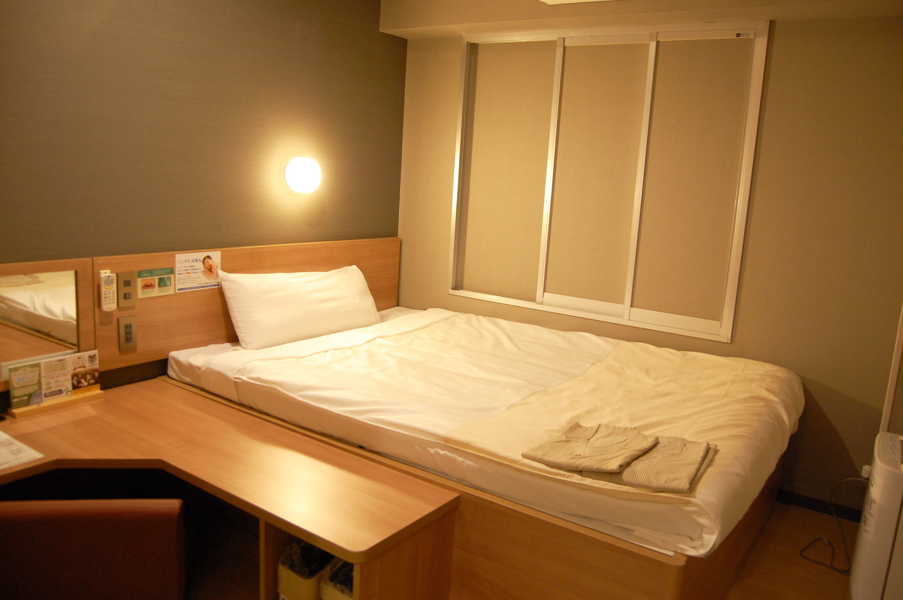
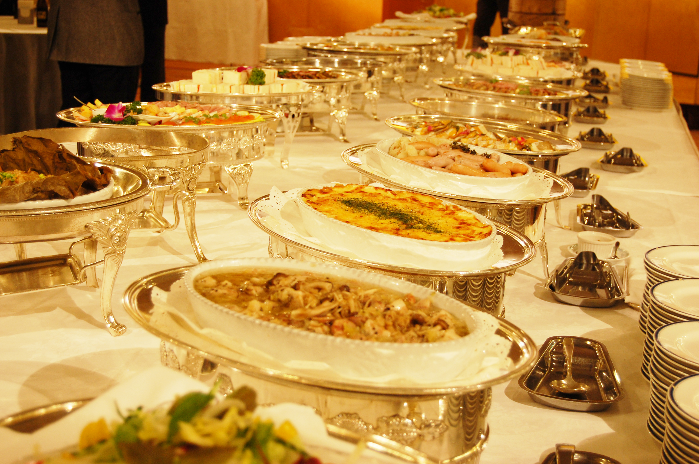
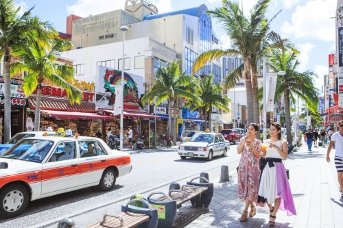
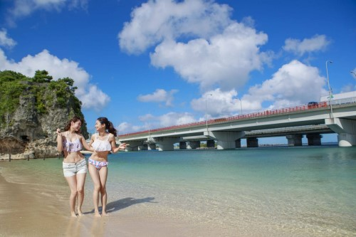
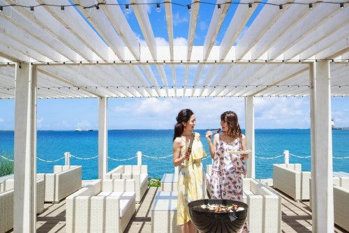
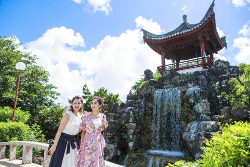
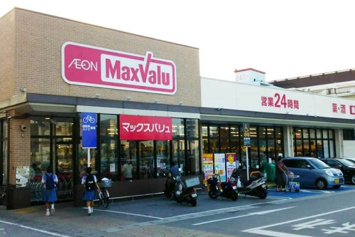

<!DOCTYPE html>
<html lang="ja">
    <head>
        <meta charset="UTF-8">
        <title>practice</title>
        <meta name="description" content="なかむらせなポートフォリオ">
        <link rel="shortcut icon" href="images/favicon.png" type="image/x-icon">


        <!-- CSS -->
        <link rel="stylesheet" href="https://unpkg.com/ress/dist/ress.min.css">
        <link href="style.css" rel="stylesheet">

        <link rel="stylesheet" href="https://cdn.jsdelivr.net/bxslider/4.2.12/jquery.bxslider.css">
        <script src="https://ajax.googleapis.com/ajax/libs/jquery/3.1.1/jquery.min.js"></script>
        <script src="https://cdn.jsdelivr.net/bxslider/4.2.12/jquery.bxslider.min.js"></script>

        <script type="text/javascript">
                $(document).ready(function(){
                    $('.slider').bxSlider({
                        auto: true,
                        pause: 5000,
                    });
                });
        </script>
        <script src="https://kit.fontawesome.com/83c01be926.js" crossorigin="anonymous"></script>
    </head>
</html>

<body>
    <header class="page-header">
        <h1 class="logo"><a href="index.html">ホテル波の上　うみそら公園前</a></h1>
        <p class="TEL">TEL 000-0000-0000</p>
        <nav class="nav">
            <ul class="header_nav">
                <li class="main-nav"><a href="index.html">ホーム</a></li>
                <li class="main-nav"><a href="plan.html">宿泊プラン</a></li>
                <li class="main-nav"><a href="access.html">アクセス</a></li>
                <li class="main-nav"><a href="contact.html">お問い合わせ</a></li>
            </ul>
        </nav>    
    </header>

        <div class="slider">
            
            
            
        </div>

        <div class="main-contents">
            <div class="content">
                <h2>期間限定宿泊プラン</h2>
                <p class="contents-in">5,000円～
                    <br>8人まで宿泊可能
                    <br>※詳しくは<a href="plan.html">宿泊プラン</a>をご覧ください
                </p>
            </div>
            <div class="content">
                <h2>ホテルのおすすめポイント</h2>
                <ul class="contents-in">
                    <li><i class="fas fa-check"></i>無料WiFi完備</li>
                    <li><i class="fas fa-check"></i>敷地内駐車場</li>
                    <li><i class="fas fa-check"></i>安心の24時間サポート</li>
                    <li><i class="fas fa-check"></i>充実したアメニティ</li>
                </ul>
            </div>
            <div class="content">
                <h2>近隣おすすめスポット</h2>

                <div class="spot">
                    <h4 id="spot-top">国際通り　(車で6分)</h4>
                    <div class="img-p">
                        
                        <p>沖縄旅行といえば、ここ！ 那覇のメインストリート「国際通り」はお土産屋やそこにしか売っていない、オリジナルグッズ、美味しい飲食店など約600店舗のお店が開いている、那覇の街の中心地として最も活気のある通りです。</p>
                    </div>
                </div>

                <div class="spot">
                    <h4>那覇唯一の海水浴場「波の上ビーチ」（徒歩4分）</h4>
                    <div class="img-p">
                        
                        <p>那覇で唯一、海水浴が楽しめるビーチです。 国際通りも近く、レストランやトイレのほか、ロッカー、更衣室、シャワーも設置されているため、気軽に泳ぎに出かけ、帰りもそのまま街へ遊びに行けます。</p>
                    </div>
                </div>

                <div class="spot">
                    <h4>リゾートマジック （車で8分)</h4>
                    <div class="img-p">
                        
                        <p>沖縄の青い海、白い砂浜に囲まれながら楽しむBBQ 沖縄の那覇空港から車で15分の場所に位置する「RESORT MAGIC（リゾートマジック）」はBBQは、ゆったりくつろげるラウンジエリアがあり、ご家族やカップル、友人同士や団体のお客様など、様々なシーンでお楽しみいただけます。</p>
                    </div>
                </div>

                <div class="spot">
                    <h4>福州園　（徒歩3分)</h4>
                    <div class="img-p">
                        
                        <p>福州園は中国の雄大な自然と福州の名勝をイメージして造られていて、異国情緒にあふれています。福州園のある那覇市久米は、今から600年ほど前に福建省から移住してきた人たちが住み始めたところでもあり、中国とのゆかりの深い場所です。 撮影なども自由に行えますので、少し違った沖縄旅行を楽しむ方は是非♪</p>
                    </div>
                </div>

                <div class="spot">
                    <h4>マックスバリュー若狭店 (徒歩1分）</h4>
                    <div class="img-p">
                        
                        <p>24時間営業しているスーパーです! 沖縄にしか売っていない食べ物や商品も販売していますので、是非一度ご利用ください。</p>
                    </div>
                </div>
            </div>
        </div>

        <footer>
            <p>〒900-0031 沖縄県那覇市若狭１丁目１４−１５ TEL 098-866-3224 © 2019. ブレオマンスリー波の上うみそら公園前-那覇での格安快適旅をあなたに</p>
        </footer>
        <script src="test.js"></script>
</body>